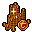
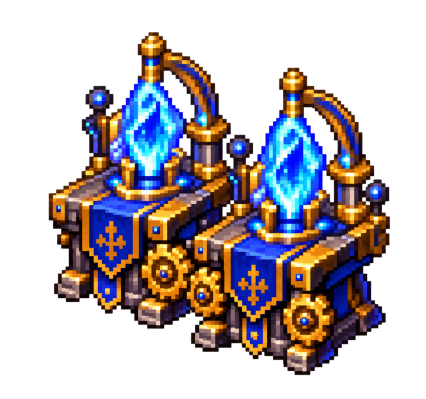
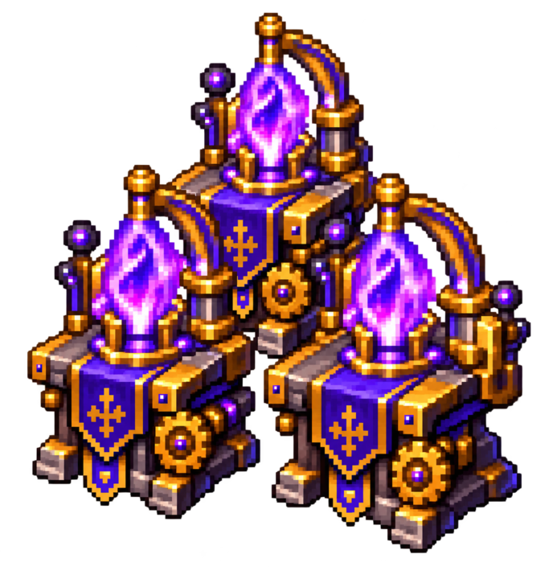

Produza, acumule e evolua
A produção gera progresso para a maestria do hireling atribuído à oficina.
Escolha uma receita e deixe o Hireling Enchanter fabricar os itens automaticamente.
Cada ciclo realmente concluído aumenta o progresso daquele hireling.
Alcance a meta de ciclos e pague o treinamento exigido pelo próximo tier.
Os tiers reduzem tempo e custo enquanto aumentam a produção obtida.
Depois de confirmar o pedido, o Hireling Enchanter continua trabalhando mesmo quando você está desconectado.
Adquira na Store do jogo
O Hireling Enchanter e seus dois upgrades de oficina são compras permanentes do personagem.
Hireling Enchanter

3.000 TCDesbloqueia permanentemente a produção automatizada de itens enchanted neste personagem.
- Inclui Workshop Slot I
- 1 produção simultânea
- Armazém para 2.000 ciclos
- Expansível até 3 produções e 4.000 ciclos

Hireling Workshop Slot II
1.500 TCExpande permanentemente a oficina para duas produções simultâneas.
- Requer Hireling Enchanter
- Requer pelo menos 2 hirelings
- Capacidade aumenta para 3.000 ciclos
- Reduz 5 segundos de cada ciclo

Hireling Workshop Slot III
1.500 TCLeva a oficina ao máximo de três produções simultâneas.
- Requer Workshop Slot II
- Requer pelo menos 3 hirelings
- Capacidade aumenta para 4.000 ciclos
- Redução total de 10 segundos por ciclo
Tiers de Maestria
Cada hireling possui progresso próprio e precisa cumprir as metas na ordem, sem pular tiers.
| Tier | Grau | Ciclos exigidos | Treinamento | Tempo-base | Produção | Desconto |
|---|---|---|---|---|---|---|
| T1 | Iniciante | 0 | Grátis | 40s | Base | 0% |
| T2 | Aprendiz | 1.000 | 200kk | 37s | +10% | −5% |
| T3 | Especialista | 5.000 | 500kk | 34s | +20% | −10% |
| T4 | Mestre Encantador | 12.000 | 1kkk | 31s | +30% | −15% |
| T5 | Grão-Mestre Encantador | 25.000 | 1,7kkk | 29s | +40% | −20% |
Workshop Slots
Cada produção simultânea deve ser atribuída a um hireling diferente.
Slot I
1 produção2.000 ciclos compartilhadosSem redução adicional de tempoSlot II
2 produções3.000 ciclos compartilhados−5 segundos em cada cicloSlot III
3 produções4.000 ciclos compartilhados−10 segundos em cada cicloRegras importantes
Confira o que conta para o progresso antes de iniciar pedidos longos.
- Somente fabricações realmente concluídas geram progresso.
- Ao cancelar uma produção, apenas os ciclos já concluídos contam.
- Coletar itens prontos não concede progresso adicional.
- O treinamento pago é permanente e não pode ser desfeito.
- Os tiers devem ser desbloqueados em sequência.
- Cada hireling mantém sua própria progressão de maestria.
- Pedidos iniciados antes do treinamento continuam usando os valores do tier anterior.
- A produção pausa enquanto o hireling atribuído estiver guardado na lâmpada.
Como usar
Da conversa com o hireling até a retirada dos produtos.
- 01Fale com o Hireling Enchanter instalado na sua house.
- 02Abra o menu de Produção Encantada.
- 03Confira seu progresso em Treinamento / Tier.
- 04Escolha a receita, defina a quantidade e confirme o pedido.
- 05Retire os itens produzidos no armazém compartilhado da oficina.